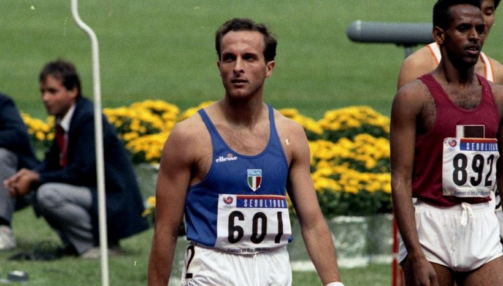
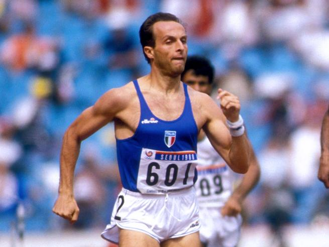
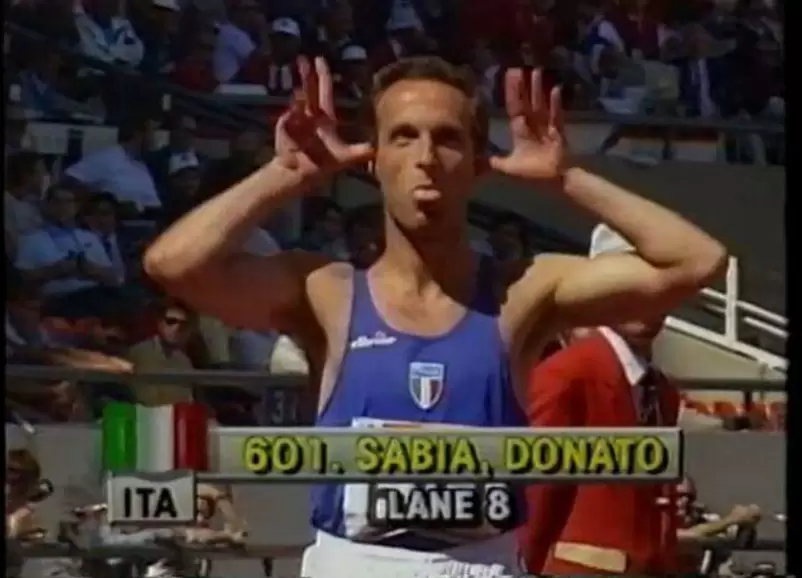

Donato Sabia



| Donato Sabia è stato un interprete di primissimo piano dell'atletica leggera italiana. La sua specialità erano gli 800 metri, una gara impegnativa per atleti che sapevano sfidare la fatica con una combinazione di forza muscolare e razionalità. Donato aveva sia la forza fisica che l'acutezza mentale necessarie per eccellere in questa disciplina. Questa combinazione perfetta tra gambe e testa gli ha permesso di tradurre il suo talento in successi nei contesti agonistici più prestigiosi. Ha partecipato alle Olimpiadi in due diverse edizioni, raggiungendo la finale in entrambe. Nel 1984, alle Olimpiadi di Los Angeles, ha ottenuto un notevole quinto posto, e nel 1988, a Seul, è giunto settimo. Inoltre, ha conquistato l'oro agli Europei indoor di Goteborg. Il 1984 è stato un anno particolarmente straordinario per Donato Sabia. È l'anno in cui ha partecipato alle Olimpiadi di Los Angeles e agli Europei di Goteborg. È anche l'anno in cui ha stabilito la terza migliore prestazione italiana (con un tempo di 1'43.88) nei 800 metri, avvicinandosi di pochi centesimi di secondo al record assoluto detenuto da Marcello Fiasconaro. Ciò che distingueva Donato Sabia era il suo impegno per uno sport pulito. Nonostante le pressioni e gli infortuni che lo hanno tenuto lontano dalle gare importanti per lunghi periodi, è rimasto fedele ai suoi principi. Nel 1987, dopo essere giunto secondo alla Coppa Europa di Praga sotto la guida di Sandro Donati, subì un altro infortunio. Gli fu proposto di ricorrere al doping per continuare la sua carriera, ma rifiutò questa via. Invece, denunciò il fatto e disse no al doping, anche se in quei tempi l'uso di sostanze proibite era quasi istituzionalizzato nello sport. Questa scelta coraggiosa gli chiuse molte porte, ma rappresentò una testimonianza della sua integrità e del suo impegno per uno sport onesto. Donato Sabia è stato un atleta straordinario e un modello di vita per molti, mi ha trasmesso la passione per questo sport ed è per me, un modello di vita. |